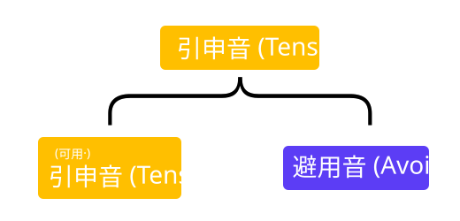
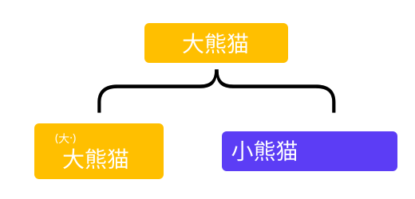

上一讲我们学习了引申和弦（Tension Chord）的思维方式与记法。然而在实际使用中，从声音质感来看，有些音容易叠加，有些音则难以叠加。理解这一点正是本讲的目标。
 1. 避用音（Avoid Note）
1. 避用音（Avoid Note）
引申音（Tension）本质上是为声音增添一抹微妙浑浊感的配料，好比拉面里的“加料小菜”；但各个引申音对“风味”产生的影响却存在着巨大的个体差异。 在第III章介绍的九和弦（Ninth Chord）无论叠在哪个根音上都属于“淡味”，打个比方就相当于“葱花”或“芝麻”。然而在引申音家族中，也存在着像“咖喱粉”或“香菜”一样，一旦加进去就会彻底颠覆原有风味的极其强烈的引申音。

因此在常规音乐理论中，将引申音中可以毫无顾虑随意添加的音称为可用引申音（Available Tension），而将难以驾驭、需要“格外小心”的音单独归类为避用音（Avoid Note）。 若在无临时记号的情况下将自然音阶和弦叠置到13度，各级和弦中的避用音如下所示：

如上图所示，除IV级和弦之外，其他和弦都难逃某个引申音“阵亡”的宿命。然而，究竟为什么会有必须被“回避”的音呢？这对于追求自由创作而言是一个绕不开的重大课题。我们先姑且把“自由”暂时放在一边，倾听一下传统理论的逻辑推导。
2. 避用音的内在逻辑
细节我们后文详述，粗略概括而言，所谓避用音正是“与和弦音（Chord Tone）在小二度（）上方重叠冲突的音”。我们在第I章《七音与引申音的活用》中告诫过的“必须警惕来自上方半音的夹击”，指的正是这里的避用音。

尤其在I级或VIm和弦上叠置Fa音时最为明显：它们原本作为主和弦家族（Tonic），应当四平八稳地稳稳落定，若强行叠上具有强烈倾向性的Fa音，其安宁落地的使命就无法达成了。因此绝对不能接纳它成为和弦成员——这便是避用音的核心思想。
若视作其他和弦……？
但疑问随之而来。例如在VIm上叠置Fa音，若将其解读为IVΔ7/VI斜杠和弦，岂不是就完全没有问题了吗？

这两个和弦的声音完全一致，左边被判违规出局，右边却完全合规。这显然很难让人心服口服。这套规矩究竟是在怎样的底层逻辑下运作的呢？ 只要回顾一下音乐理论的发展史，谜团就会迎刃而解。没错，我们在绪论中的历史篇在此刻再次展现出了深远的意义。
避用音的存在根源
避用音是爵士乐理论创造出的产物。在纯正的古典音乐流派理论中，根本不存在“避用音（Avoid Note）”这一术语。爵士理论正是在古典理论不足以覆盖的盲区，自行研发并拓展改装出来的，而避用音正是其中的一项发明。

爵士乐的精髓在于即兴演奏。在即兴合奏（Jam Session）中，乐手们仅以一张基础和弦谱为纲领，所有人以此为基准现场即兴架构音乐。因此，和弦进行拥有绝对的至高地位，是唯一的行动路标。这是解开一切的钥匙。
即兴合奏中的基本礼节
换言之，避用音概念的提出，本质上是为了在任何人都不得擅自篡改和弦进程的即兴合奏中，充当乐手之间互不拆台的基本‘礼节规范’。

我们通过具体实例来说明。在上面的音频中和弦进行走了两遍，在第2遍的VIm7处，钢琴手弹响了Fa音。结果，原本好不容易迎来的“属 → 主”解决瞬间被打乱，变得模糊发黏。这就是所谓“破坏妨碍了和弦的原有声响”。 当然，FΔ7/A的声音本身十分迷人，绝不意味着这是“错误的音乐”。甚至反复聆听之后，反而会被这种奇妙的毒性所吸引。 然而，这至少超出了乐手在即兴合奏中擅自做主的自由权限。私自决定“我偏要把主和弦的着陆搅浑”，这完全属于自作主张的抢戏拆台。若真想这么做，大家应该提前排练沟通好，把和弦谱上的代号正式改为“FΔ7/A”，在全体认知协同的前提下共同演奏。

针对某个既定和弦，哪些音的影响力微弱不争宠，哪些音的影响力强横会喧宾夺主——为了划定这条红线而准备的术语，正是‘可用（Available）’与‘避用（Avoid）’。

因此，对于“换个和弦名称理解不就行了吗？”的质问，终极答案正是：“在即兴演奏中，和弦被误判为功能截然不同的另一个和弦，这本身正是必须严防死守的事故”。 但若是你在独立作曲，且正是渴望特意借助这种独特的浑浊感来抒发艺术意图，那么天王老子也没有权力剥夺你的自由。事实上在近现代古典音乐中，这种用音手法比比皆是。当然，前提是你心中清楚地明白自己在进行一次“激进的和声冒险”。
不是“规避”，而是“谨慎对待”
理解了历史演进，我们才能准确把握乐理的真实分量。若在尚未洞悉这一背景前便陷入对“避用（Avoid）”字面含义的强迫症焦虑，就会扼杀宝贵的自由创作精神。“Avoid”这个词极易引发误导，确实不算一个多高明的用词。著名的爵士理论典籍《The Jazz Theory Book》中便有一段极其精辟的论述：
“Avoid note” is not a very good term, because it implies that you shouldn’t play the note at all. A better name would be a “handle with care” note.
“避用音（Avoid note）”不是一个好词，因为它的字面含义仿佛在勒令人们绝不能弹这个音。一个更恰当的名字应该是“谨慎对待（Handle with care）”之音。
—— Mark Levine《The Jazz Theory Book》
正如大师所言。我们不应抱着“逃避”的抗拒心理，而应以“审慎对待”的清醒目光去端详它们。 在这世界上，没有毫无存在意义的音，也没有绝对错误的音。必定存在着某些唯有借由它们才能描摹的心灵世界。“避用音”不过是抛开艺术探索的情怀不论、在即兴合奏时为避免混乱而先行罗列的一份“重点注意事项黑名单”罢了。
3. 12个半音的层级筛查
一份整理了需要格外当心的音符黑名单——建立起这样的认知后，想必大家就不会再草率地将其全盘弃之如敝履了。我们不妨再深入聆听一下爵士乐理论的逻辑推演。 从即兴演奏的实操视角出发，12个半音大致遵循着如下的树状谱系被层层分类甄选：

首先第一步，以何种音阶（Scale）为基准展开演奏是不可动摇的前提大纲。不在当前音阶内的音被首先剔除，除纯粹的装饰性滑过之外原则上不轻易调用。例如在C大调音阶的语境下，5个黑键首先被划入编外。这是理所当然的第一层筛选。

紧接着，当前小节所指定的和弦同样是既成事实，于是根据*是否属于和弦音（Chord Tone）*再次分流。例如当前和弦是G7，那么g、b、d、f这4个音就是和弦音，剩下的3个音被划归为和弦外音。

最后的终极裁判，便是该音是否会破坏和弦原有的稳定感与功能属性——在此顺利通过审核的，被晋升为“可用引申音（Available Tension）”；被亮红灯驳回的，则被贴上“避用音（Avoid Note）”的标签。在伯克利音乐学院（Berklee）体系的理论著作中，是这样阐述的：
The Avoid Note, if used harmonically, will interfere with, or destabilize the chord sound and is therefore avoided harmonically.
避用音若在和声维度（同时发声）被使用，会干扰破坏和弦的声音品质或使其动荡不安，因此在和声构筑中应当加以规避。
—— Nettles, Barrie; Graf, Richard. 《The Chord Scale Theory Jazz Harmony》（p.26）
值得划重点的是：理论并非禁止你在演奏中触碰它，而是警告不要“在和声维度（harmonically）”长久鸣响。避用音不被允许作为和弦音的固定成分叠置共振，但若是作为旋律线条中稍纵即逝的经过跳板，则完全合规。 在C大调音阶 · G7和弦的例子中，c音因为严重阻碍了属七和弦向主和弦解决的功能张力，因而被裁定为避用音。

至此，全部12个音被条理分明地各归其位。伴奏和声乐手与独奏旋律乐手都能清晰明了地知道什么音该以何种方式安放，大家便能在互信默契中享受畅快淋漓的即兴合奏。这便是爵士乐理倾心研发的引申音与避用音体系的宏伟全貌。
4. 判定为避用音的标准
那么，这最后一关“是否妨碍和弦功能”的裁决究竟是如何做出的呢？我们来拆解其中的关键内核。
避用音的核心大原则
被裁定为避用音的大原则其实只有唯一一条，正如前文所指出的：与某个和弦音形成上方半音（小二度）重叠的音[1]。


这是IΔ7与IIIm7的谱例。稍加推导便会发现，在大调自然音阶“全全半全全全半”的音程结构下，在调内自然音中能够满足‘从半音上方重叠压制’条件的候选者，只有Fa和Do这两个音。 虽然拓展到非自然音阶和弦时组合会略微增多，但就核心大纲而言，逻辑其实出奇地单纯简洁。
保守派理论的追加避用音
然而，在传统理论中存在着一个唯一的特例裁判，它发生在IIm7和弦上。

在IIm7和弦中，其13th引申音（在C大调中为Si）即便根本没有压在任何和弦音的上方半音上，却依然被传统保守派裁定为避用音！ 官方给出的解释是：一旦凑齐了Re、Fa、Si这3个音，整体声音便极度趋近于V7，“会导致下属功能（Subdominant）陷入严重混乱”，因此严加禁止[2]。 这体现了极其典型的传统爵士思维：爵士乐的命脉是2-5-1，IIm7本是为后续属和弦抬轿铺路的绿叶，如果连它自己都发出了类似属和弦的喧嚣，整个功能链条就会失控坍塌。
IIm7(13)的独特魅力
然而，由于它并未与任何和弦音发生上方半音的肉搏冲撞，其声音浑浊度并不刺耳，实际处境与其他的避用音截然不同。事实上由“Re–Fa–La–Si”构成的和弦具备极其迷人高级的声音质感，不仅在极其严肃严苛的古典大师笔下常被采用，在流行乐坛更是诞生过享誉全球的不朽金曲。
这就是披头士乐队的传世经典《Yesterday》。在唱到“I don't know”以及“Now I long for yesterday”时，保罗·麦卡特尼（Paul McCartney）在旋律中肆意高亢地唱响了这个13th引申音。若保罗当年被保守理论的避用音教条捆住手脚，这首旷世名作恐怕就与人类失之交臂了。
关于IIm7避用音的学术论争
聆听《Yesterday》的旋律就会发现，硬要说加上Si音后它就听不出S（下属）功能了，未免显得过于吹毛求疵。 鉴于这一现实，当今哪怕在爵士乐理学界，也有越来越多的理论家持开放包容态度，诸如指出“在现代实际演奏中无障碍调用的案例与日俱增”，或者折中限定为“唯独在后续紧接V7时才视作避用音”[3]。 SoundQuest自由乐理全面拥护这种开放容纳的现代见解，在后文中当我们提及“避用音”时，将不再把此音归入其中。将这一人为特例剔除之后，我们便能彻底贯彻极其清爽纯粹的统一大原则：“可能成为避用音的，唯有处于和弦音上方半音的音符”。
属七和弦的豁免特权
基于上述大原则，虽然“上方半音碰撞即犯忌”，但当和弦品质为属七和弦（Dominant 7th）时，破例被特许容忍若干上方半音的重叠。 在属七和弦中，唯独直接从半音上方骑脸压制决定和弦品质核心命脉三音（3rd）的11th引申音被判定为避用音，其他所有半音重叠均被慷慨赦免[4]。

上图是III7和弦的谱例。虽然La音依然出局，但在IIIm7中曾被严词禁止的Fa音与Do音，在此刻全部峰回路转获得了通行证！ 这意味着在即兴演奏中，只要和弦谱上赫然写着“III7”，乐手随手揉入Fa音或Do音，完全不必担心会砸场翻车。
IVΔ7 III7(-13) VIm7
这是在4–3–6进行中悄悄在III7上混入Do音的示例。虽然带有极其强烈的浑浊感，但由于属七和弦自身本就携带浓郁的张力，听起来丝毫不显违和。加之Sol♯与Re交织出的强劲三导向VIm的动力势不可挡，理论家们判定单凭一个Do音根本动摇不了其核心功能——大体便是如此考量通过的。
综上所述，先经历“是否属于音阶内音”的初筛，随后音阶内各音究竟是Available还是Avoid，将遵循如下的决策流程图敲定：

提到引申音与避用音，很多人第一反应是头疼地死记硬背数字。然而那是即兴演奏乐手为了在电光石火间训练手指肌肉记忆才需要的苦功；若立足于作曲与编曲，完全没有必要经历机械死背的痛苦。 更健康的汲取路径恰恰相反：在创作或分析优秀作品时偶然邂逅了令人心动的声响，为了永久珍藏该音色记忆，再用数字代号将其标签化。如此一来，数字代号与鲜活的声音质感融为一体，化作骨血里的“活知识”。久而久之，只需扫一眼和弦代号，美妙的声响便会在脑海中自然回荡。
“Tension”一词的广义与狭义之辨
最后，针对“Tension”一词在日常使用中的语义摇摆做一点补充说明。 “可用引申音（Available Tension）”是和弦理论的核心基石，但作为日常口语未免过于冗长拗口。因此在实操中，人们往往将其简称为‘Tension’。换言之，该词原本涵盖了可用引申与不可用避用音两者，却在日常中被压缩在更狭义的层面调用。


这乍看之下略显混乱，但正如在中文里大家把“大熊猫”统称为“熊猫”，而并没有引发世界运转混乱一样，在日常交流层面，这种广义与狭义的摇摆通常不会造成严重误解。


然而在特定学术讨论中，比如当有人说“这个广义引申音是避用音”时，难免有人会杠一句“既然是引申音怎么又是避用音？说法真怪”。若想彻底免除这种字眼上的纠缠，采用涵盖可用引申与避用音两者的上位概念——“和弦外音（Non-chord tone）”，在绝大多数语境下都能做到严谨周密、毫无破绽[5]。

未来的求索航道
行文至此，相信大家对传统意义上的避用音体系已经有了透彻通达的领悟。而在实战编配中，还有若干不可忽视的深层要素需要把握，我们将在下一讲全面展开。
总结
- 引申音对和弦原貌的冲击度有大有小，冲击剧烈者在即兴合奏中无法随意妄动，传统上称之为“避用音（Avoid Note）”。
- 避用音的大原则极其简练：即“自然音阶内部、落在某个和弦音上方半音（小二度）位置的音”。
- 唯独属七和弦享有豁免权：落在根音和五音上方半音的引申音被排除在避用音之外，唯有压制三音的11th引申音继续被定为避用音。